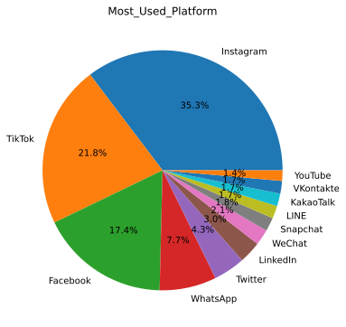

Student Social Media Addiction
This dataset aims to observe whether certain metrics of individuals are correlated to social media addiction. The dataset came with twelve columns about students’ demographics and other data about social media usage.
First, we observe the overall nature of this survey. The number of males and females observed in this study were relatively the same, as was the number of undergraduate and graduate students in this survey.
However, it is important to note that the proportion of gender/age/academic level is not balanced. There are disproportionately more males in graduate school and more females in undergraduate, so any correlations that are related to gender could also be related to age/academic level, and the same conclusion could be drawn vice versa.
Region-wise, participants were all across the globe, most prominently in Asia and Europe.
The most used social media platform was observed to be Instagram. However, it is important to note that some social media platforms are more prominently used in certain regions. For example, all participants who answered LINE as their most used platform were all from Japan, and all participants who answered VKontakte as their most used platform were all from Russia. This is not to say that these platforms are only used in those respective countries, but rather, popularity of some platforms may differ from region to region, which may contribute to its status as “most used.”

I further classified these platforms into two groups: video/photo sharing and social networking/messaging. Instagram, TikTok, and YouTube are video/photo sharing, and the Facebook, WhatsApp, Twitter, LinkedIn, WeChat, Snapchat, LINE, KakaoTalk, VKontakte are social networking/messaging.
A self reported value of whether social media impacted academic performance was also given, with a majority of students saying that it was affecting academic performance.
After looking over the data for the categorical variables, I observed the correlation coefficients between all the numerical variables. Since the correlation coefficients for some of the numerical variables seem to be large (in both positive and negative directions), there could be multicollinearity.
This scatterplot between the average daily usage hours and the hours of sleep per night has a clear negative correlation: the more hours used on social media, there tends to be less hours of sleep per night. There is a clustering of HS students in around 5-6 hours of usage and around 5-6 hours of sleep per night, but with the small sample size, it is difficult to draw a conclusion on academic level being a factor of more social media hours and less sleep hours.
Categorizing the daily usage hours and mental health score by continents, there is also a relatively negative correlation between the two variables: the more hours on social media, the lower the mental health score. There is a clear clustering of green on the top of the graph, showing that Europe tends to populate the higher mental health score and lower daily usage hour section of the graph. Similarly, there is much more blue and orange on the lower section of the graph, showing that Asia and North America tends to have higher usage hours with lower mental health scores.
This aligns with the distribution of daily usage hours separated by continent, with North America and Asia having more hours than Europe.
As the average daily usage hours increases, the addicted score also tends to increase, implying a positive correlation between the two variables. Grouping the daily usage hours and self reported addicted score by the type of platform, there is a clustering of video/photo sharing social media being near the top of the graph, which implies that those that reported a higher addicted score tends to use these types of platforms. This could be because video and photo sharing tends to have more content for entertainment, while social networking and messaging apps are usually opened with intent from the user. Since a user feels they have more control over using that app, this could potentially lead to reporting a lower addicted score.
When looking at the distribution of the addicted score based on platform alone, the distribution of those who mainly use social networking or messaging apps has a larger range and a lower median, while those who use video and photo sharing platforms has a smaller range, but at a higher addiction median.
Looking at the correlation between the number of conflicts over social media and the addiction score, this also follows a positive correlation. The more conflicts there are, there tends to be a higher addicted score. It’s difficult to see if there is a direct relationship between the number of conflicts and the addicted score, however, as a number of third variables could be in play, such as being online more, being more involved with other individuals online, or using social media as a way to network with peers. If we separate this scatterplot into affecting academic performance, we can observe that those who have more conflicts over social media and have a greater addicted score tend to recognize that social media affects their academic performance. However, without more detailed questions, it is difficult to ascertain the relationship between conflicts and addiction score.
To investigate this further, I looked at what could potentially be correlated with affecting academic performance. Most notably, the platform type seemed to play a major role. More individuals found using video/photo sharing platforms to have more of an effect on their academics, compared to the roughly same number of individuals for social networking/messaging platforms.
Overall, while it is difficult to narrow down a singular cause for high social media addiction, there are factors that could play a role. Different academic levels could be surrounded by different forms of social media, with high schoolers seeing a pattern of less sleep, higher addiction scores, and more time on social media. Additionally, regional location could play a factor in using social media, as there could be different cultural expectations of students in different parts of the world. Furthermore, the type of platform appears to play a part in being addicted to social media, with video and photo sharing platforms tending to have a greater addiction score as compared to social networking and messaging platforms. There is a pattern of social media affecting academic performance, with those seeing an effect having a higher addiction score with more hours per day. While we are unable to determine whether mental health issues cause more addiction or if it is the other way around, the two are still correlated. Students could use social media as a way to manage or suppress their feelings, or they could have negative feelings as a result of online behavior. Having more conflicts that arise through social media are seen to be related to a greater addiction score, but it is difficult to determine if there are other factors at play. The purpose of this analysis is for me to be familiar and comfortable with different types of data visualizations. If I were to enhance this project further, I would run a prediction or linear regression model with each variable to determine each weight. However, with the presence of multicollinearity as observed earlier, it may be more mathematically difficult, which I have not yet reached that level.